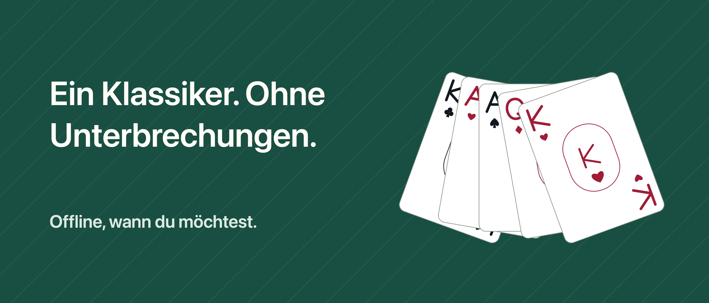

Solitär Unbound

Ein Moment für dich, Karte für Karte.
Zeit für Karten, ohne Unterbrechungen. Spiele Klondike mit 1 oder 3 Karten pro Zug – ohne Werbung, IFG-Konto oder Abo.
ZURÜCKNEHMEN UND NEU VERSUCHEN Zurücknehmen, Wiederholen und Hinweise auf erlaubte Züge sind kostenlos. Ziehe Karten oder tippe erst die Karte und dann das Ziel an. Relax blendet die Zeit aus; Klassisch zeigt Zeit und Züge.
EINE PARTIE ZUM WIEDERAUFNEHMEN Spielstände und Statistiken bleiben auf deinem Gerät. Wähle eine zufällige Ausgangslage oder eine mit überprüfter Lösung und kehre zur täglichen Herausforderung zurück. Zufallspartien sind nicht immer lösbar. Auch bei einer überprüften Ausgangslage können deine Entscheidungen in eine Sackgasse führen.
MEHR VARIANTEN MIT PRO Ein einmaliger Kauf ergänzt FreeCell, Spider mit 1, 2 und 4 Kartenfarben, das Herausforderungsarchiv und weitere Designs: insgesamt sechs Tische, sechs Kartenrückseiten und drei Kartenstile. Keine Hinweise zum Nachkaufen oder Aufbrauchen.
Das Spiel funktioniert offline. Kauf und Wiederherstellung von Pro können Internet und einen Apple Account benötigen. Fortschritte werden nicht zwischen Geräten synchronisiert und können beim Deinstallieren verloren gehen. Die Wiederherstellung von Pro bringt gelöschte Fortschritte nicht zurück.